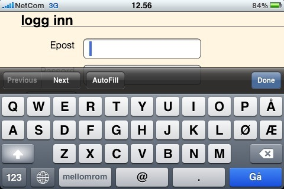

Bruk HTML5 nå
HTML5 bør benyttes allerede i dag med tanke på bakoverkompatibiliteten som eksisterer i formatet og de nye mulighetene som tilbys. Ekstra funksjonalitet som offline lagring og geolocation kan fint inkluderes på en webside og skjules for nettlesere uten støtte. Alle nye funksjoner støtter også alternativ fallback enten spesifisert eksplisitt som med <video> eller det håndteres automatisk av nettleseren som med <input type="email">. Doctypen i seg selv er et glimrende eksempel. <!doctype html> blir tolket av alle browsere og trigger alltid standard-mode i browsere (inkludert IE6) som gjør det enklere å skrive cross-browser CSS. Og ikke minst; det er faktisk mulig å skrive den uten copy/paste.
Dessverre så er det slik at det er mange utviklere og personer involvert i beslutninger om web i Norge som har et alt for sløvt forhold til standarder. Mange ser ikke ulempene ved bruk av alternative proprietære teknologier som Thomas Hansen utdyper farene ved i sitt innlegg om "ActiveX 2.0". Istedenfor å fortsette hans korstog mot Flash-elskerne i reklamebransjen og de teknologisk uvitende mellomlederne som har vært på seminar hos Microsoft og Adobe, så vil jeg heller fremheve fordelene med HTML5. Det vil være behov for slike plugins til visse typer funksjonalitet, men med HTML5 gjør man mye av denne bruken overflødig. I denne sammenheng kan det også nevnes at innhold utviklet i Flash er vanskeligere for søkemotorer å finne frem til, mindre tilgjengelig for brukere med særstilte behov, lite brukervennlige samt at mange, inkluderte undertegnende, misliker (og blokkerer) Flash grunnet treghet og systemfeil som ofte forekommer i Flash.
Det du kan bruke nå
Kjekke skjemakontrollere
Bruker du iPhone har du kanskje lagt merke til bruk av forskjellig visninger på det visuelle tastaturet. Hver visningstype kan aktiveres med de nye input element typene url, number og email. Det finnes også flere andre typer slik som for eksempel: image, date, time og range. Og hva hvis nettleseren ikke har støtte? Joda; fallback er visning av type tekst. For typen e-mail resulterer det i at det visuelle tastaturet på iPhone endres til bla. å inkludere alfakrøll.  For typen number så vil man i Opera få en "spinbox" med knapper for å øke eller senke tallverdien og et tastatur med tall på iPhone. Samtidig vil alle andre nettlesere tolke et slikt felt som et vanlig tekst-felt.
Ny struktur

Semantikk har alltid vært en del av oppbygningen av et HTML-dokument, i HTML5 fortsetter man videre med dette og får enda mer spesifiserte elementer. Istedenfor generiske <div> elementer har vi nå fått blant annet: <header>, <nav>, <article>, <section>, <aside> og <footer>. Foreløpig så vil bruken av disse kun medføre kudos fra undertegnende og andre webnerds, men de fleste nettlesere tolker disse nye elementene som en vanlig <div> så det er ingen ulemper ved å være bleeding-edge. Det eneste man trenger å gjøre er å spesifisere de som block-elementer i CSS slik at de oppfører seg som en <div>. I tillegg trenger man også et par JavaScript-hacks til å tilfredsstille vår venn Internet Explorer.
CSS3
I tillegg til HTML5 skjer det også mye spennende med CSS3 som allerede i dag kan benyttes. For typografinerder er det nok @Font-face som frister mest, med denne kan man bruke fonter som ikke brukeren har installert. Fonten som er definert blir så lastet ned av nettleseren. Safari, Chrome, Firefox og Opera har allerede støtte for dette. Annet snacks for designere er avrundede hjørner som gjør at man slipper å bruke en samling av enkeltbilder for å oppnå denne effekten.
Det du kan bruke på iPhone
Lagre data lokalt - bruk nettsider offline
Mailklienten på iPhone er ikke helt optimal og det hender derfor ofte at jeg starter Safari for å benytte Gmail sin HTML5-applikasjon. I tillegg til å vise "conversations" og at den er en generelt sett meget god applikasjon så benytter den også HTML5 lokal lagring i database samt manifest cache for å lagre statiske filer lokalt. Stopper NSB i en tunnel og jeg blir offline har jeg allikevel tilgang til mail som ligger i innboksen. Google er virkelig kroneksempelet på bruk av HTML5 i mobile applikasjoner. Mange av deres tjeneste har meget gode og brukervennlige mobile grensesnitt som utnytter lokal lagring, offline mulighet og andre nyttige HTML5-funksjoner.
For å lagre data lokalt har man to muligheter: den ene er en enkel key/value lagring mens den andre er en litt mer avansert relasjonsdatabase. Man kan med andre ord med sistnevnte speile mye av komplisert datastruktur som man har på serveren.
Finn brukeren med geolocation
Med GPS og Safari/MobileWebKit har iPhone mulighet til å hente brukerens lokasjon. Tjenesten Google Latitude har tatt dette i bruk og man får presentert sin og sine venners lokasjon på et kart. Google sin mobile søkeside benytter også dette slik at man kan få relevante treff i forhold til nåværende lokasjon. I eksempelet på bildene har jeg søkt etter 'tapas' og får opp nærmeste restauranter hvor jeg kan nyte albondigas og San Miguel.
Det du kan eksperimentere med
Video uten Flash
Takket være den glimrende Click2Flash plugin'en til Safari slipper jeg unna det meste som er ondt på internett. Og takket være YouTube sin nylig innførte bruk av <video> kan jeg se morsomme videoklipp der uten å aktivere Flash. Dette er altså noe du egentlig kan benytte i dag men foreløpig er det kun Safari og Chrome som støtter dette hos YouTube, det er derfor nødvendig med en Flash-player for andre nettlesere (Mozilla har ikke implementert den proprietære H.264 codec'en som YouTube benytter).
Opplasting av flere filer samtidig
En unødvendig og kjip begrensing med filopplasting i tidligere versjoner av HTML var at det kun var mulig å laste opp en fil og at man ikke hadde noen programmatisk kontroll over prosessen. Dette har flere løst med en kombinasjon av Flash og JavaScript men nå kommer det altså i HTML5. Og det er så enkelt som å spesifisere multiple i input-elementet.
Ajax 2.0: Web Sockets
Jeg implementerte Ajax i 24SevenOffice i 2004. Det var en revolusjon spesielt for dem som jobber i samme grensesnitt hele dagen. Men et problem med Ajax er at man kun kan kontakte nettleseren ved definerte tidspunkt eller manuelt av brukeren selv, altså 'push'. Det er riktignok måter å oppnå 'pull' (Comet) på i nettleseren i dag men med HTML5 blir dette standardisert og tilgjengelig på en mye enklere måte med Web Sockets. Dette vil være glimrende for chat-løsninger og live oppdateringer ala VG Live.
Er JavaScript tregt? La Web Workers gjør jobben
Det er riktignok få nettsider som gjør tunge beregninger i JavaScript men for dem som har behov for det er det nå mulig å sette bort slike operasjoner til Web Workers. Nettsiden og det vanlige javascriptet vil da fortsette som normalt mens kode som kjøres som Web Worker vil kjøre i en egen tråd som en bakgrunnsprosess. Det betyr at tunge prosesser ikke vil hindre brukerens opplevelse av nettsiden.
Annet snacks
<canvas> kan sammen med <video> og <audio> overta funksjoner som Flash benyttes til i dag. HTML5 definerer også standard for "dra og slipp".
Hold deg oppdatert
- Oversikt over implementasjon av HTML5-elementer
- WHATWG sin oversikt over nettleserstøtte av HTML5
- "Dive Into HTML5" - en bok om HTML5
- HTML5 Specification - W3C
- HTML5 demoer
Espen Antonsen har over 10 års erfaring med utvikling av web-applikasjoner. Tidligere en av grunderne i 24SevenOffice og komiteemedlem i OpenAjax Alliance, jobber nå som freelancer samt med MakePlans, ett system for online timebestilling og booking av ressurser.